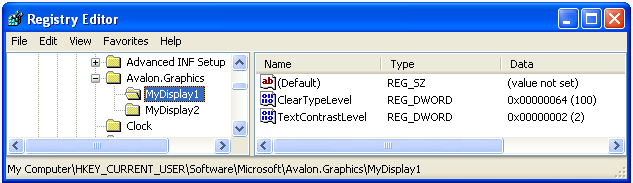
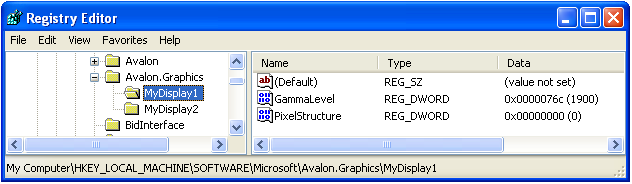

Параметры реестра ClearType
В этом разделе содержится обзор WPFТехнология Microsoft ClearType параметры реестра, используемые WPF приложений.
Общие сведения о технологии
WPF приложения, которые отображают текст на устройство отображения, используют ClearType признаки должны предоставлять чтение. ClearType — это программная технология, разработанная компанией Майкрософт для улучшения удобочитаемости текста на современных ЖК-мониторах (жидкокристаллических дисплеях), например экранах ноутбуков, карманных ПК и плоскопанельных мониторах. ClearType работает путем обращения к отдельным вертикальным элементам цветных полос в каждом пикселе ЖК-экрана. Дополнительные сведения о ClearType, см. в разделе Общие сведения о технологии ClearType.
Текст, отображаемый с ClearType может существенно отличаться при просмотре на различных устройствах отображения. Например, небольшое число мониторов реализуют элементы полос цвета расположены в порядке синий, зеленый, красный, а не чаще, красный, зеленый, синий ( RGB) порядке.
Текст, отображаемый с ClearType может также существенно отличаться при просмотре лиц с разным уровнем светочувствительности. Некоторые замечают незначительные различия в цвете лучше, чем другие.
В каждом из этих случаев ClearType функции должны быть изменены, чтобы обеспечить лучшие возможности для чтения для каждого пользователя.
Параметры реестра
WPF Задает четыре параметра реестра для управления ClearType функции:
| Параметр | Описание |
|---|---|
| ClearType level | Описывает уровень ClearType прозрачности цвета. |
| Гамма-уровень | Описывает уровень компонента цвета пикселя для устройства отображения. |
| Структура пикселей | Описывает расположение пикселей для устройства отображения. |
| Уровень контрастности текста | Описывает уровень контрастности отображаемого текста. |
Эти параметры доступны внешней конфигурации программы, которая знает, как ссылаться на WPFClearType параметры реестра. Эти параметры также можно создать или изменить через прямой доступ к значениям с использованием редактора реестра Windows.
Если WPFClearType (это состояние по умолчанию), не заданы параметры реестра WPF запросов приложения Windows сведения о системных параметрах для настроек сглаживания шрифтов.
Note
Сведения о перечислении имен устройств отображения см. в разделе SystemParametersInfoWin32 функции.
Уровень ClearType
ClearType Уровень позволяет настроить отрисовку текста, в зависимости от чувствительности к свету и восприятия индивида. Для некоторых пользователей отрисовка текста, которая использует ClearType на самом высоком уровне не создает лучшие возможности для чтения.
ClearType Уровень — целочисленное значение, в диапазоне от 0 до 100. По умолчанию — 100, что означает ClearType используются возможности максимальный ресурс элементов полос цвета дисплея. Тем не менее ClearType уровень 0 визуализирует текст оттенках серого. Установив ClearType уровня где-нибудь в диапазоне от 0 до 100, можно создать промежуточный уровень, подходящий для отдельного светочувствительности.
Параметр реестра
Параметр реестра для ClearType уровень — в параметре отдельного пользователя, соответствующий имени определенного устройства отображения:
HKEY_CURRENT_USER\SOFTWARE\Microsoft\Avalon.Graphics\<displayName>
Для каждого имени устройства отображения для пользователя ClearTypeLevel определено значение DWORD. На следующем рисунке показан параметр редактора реестра для ClearType уровень.

Note
WPF приложения для вывода текста в одном из двух режимов, с и без ClearType. Если текст отрисовывается без ClearType, он называется отрисовке в оттенках серого.
Гамма-уровень
Гамма-уровень относится к нелинейной связи между значением пикселя и яркостью. Параметр гамма-уровня должен соответствовать физическим характеристикам устройства отображения; в противном случае возможны нарушения в отрисовываемых выходных данных. Например, текст может отображаться слишком широко или узко, либо по краям вертикальных полос глифов могут отображаться цветные полосы.
Гамма-уровень — это целочисленное значение в диапазоне от 1000 до 2200. Значение по умолчанию — 1900.
Параметр реестра
Расположение параметра реестра для гамма-уровня — параметр локальной машины, соответствующий имени определенного устройства отображения.
HKEY_LOCAL_MACHINE\SOFTWARE\Microsoft\Avalon.Graphics\<displayName>
Для каждого имени устройства отображения для пользователя GammaLevel определено значение DWORD. На следующем снимке экрана показан параметр редактора реестра для гамма-уровня.

Структура пикселей
Структура пикселей описывает тип пикселей, составляющих устройство отображения. Структура пикселей определяется как один из трех типов.
| Тип | Значение | Описание |
|---|---|---|
| плоский | 0 | Устройство отображения не имеет структуры пикселей. Это означает, что источники света для каждого цвета распределены равномерно в области пикселя: это называется отрисовкой в оттенках серого. Так работает стандартное устройство отображения. ClearType никогда не применяется к отрисованному тексту. |
| RGB | 1 | Пиксели на устройстве отображения состоят из трех полос, расположенных в следующем порядке: красный, зеленый и синий. ClearType применяется к отрисованному тексту. |
| BGR | 2 | Пиксели на устройстве отображения состоят из трех полос, расположенных в следующем порядке: синий, зеленый и красный. ClearType применяется к отрисованному тексту. Обратите внимание на обратный порядок цветов по сравнению с RGB. |
Структура пикселей соответствует целочисленному значению в диапазоне от 0 до 2. Значение по умолчанию — 0, представляющее плоскую структуру пикселей.
Note
Сведения о перечислении имен устройств отображения см. в разделе EnumDisplayDevicesWin32 функции.
Параметр реестра
Расположение параметра реестра для структуры пикселей — параметр локальной машины, соответствующий имени определенного устройства отображения.
HKEY_LOCAL_MACHINE\SOFTWARE\Microsoft\Avalon.Graphics\<displayName>
Для каждого имени устройства отображения для пользователя PixelStructure определено значение DWORD. На следующем снимке экрана показан параметр редактора реестра для структуры пикселей.
Уровень контрастности текста
Уровень контрастности текста позволяет настроить отрисовку текста в зависимости от ширины полос глифов. Уровень контрастности текста — это целочисленное значение в диапазоне от 0 до 6: чем больше это значение, тем шире полоса. Значение по умолчанию — 1.
Параметр реестра
Параметр реестра для уровня контрастности текста расположен в параметре отдельного пользователя, соответствующем имени определенного устройства отображения.
HKEY_CURRENT_USER\Software\Microsoft\Avalon.Graphics\<displayName>
Для каждого имени устройства отображения для пользователя TextContrastLevel определено значение DWORD. На следующем снимке экрана показан параметр редактора реестра для уровня контрастности текста.